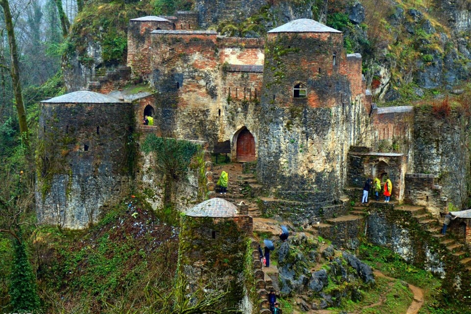

- Home
- About
- Contact
- Login
- Signup
Rasht is the largest city on Iran's Caspian Sea coast. It is a major trade center between Caucasia, Russia, and Iran using the port of Bandar-e Anzali. Rasht is also a major tourist center with the resort of Masouleh in the adjacent mountains and the beaches of Caspian as some of the major attractions.
Anzali is one of the most important cities in Iran in terms of tourism, economics, and athletics. Bandar-e Anzali is the biggest Gilaki speaking city in the world after Rasht, the capital of Gilan province. The city was home to the first and biggest port on the southern shores of the Caspian Sea.
Astaneh-ye Ashrafiyeh is a major peanut, rice, silk, and fragrant medicinal herbs producing city. It lies close to the city of Rasht and the Caspian Sea. The mausoleum of Seyed Jalal od-Din Ashraf, brother of Imam Reza, as well as the tomb of Mohammad Moin, the Iranian lexicographer and compiler of Persian Dictionary, are located here.
Langarud is located on the south coast of the Caspian Sea. One of the most important tourist attractions of Langarud is Chamkhaleh coast. Tourists enjoy horse jockeying and yachting in addition to the beach.
Tehran is the most populous city in Iran and Western Asia, and has the second-largest metropolitan area in the Middle East, after Cairo. It is ranked 24th in the world by metropolitan area population.
Damavand is an ancient and historic city. The name Damavand appears in Sassanid texts (as Dunbawand), and Parthian remains have been found there. The city fell to Arab Muslim invaders in 651 CE. It is close to Iran's tallest peak Mount Damavand, which Ferdowsi mentions abundantly in the Shahnameh. The city has relatively cool weather year-round.
Varamin is a city and capital of Varamin County, Tehran Province, Iran. At the 2011 census, its population was 218,991, and at the 2006 census, its population was 208,569, in 53,639 families.
Shahriar is a city and capital of Shahriar County, Tehran Province, Iran. At the 2006 census, its population was 328,190, in 51,814 families.
The beautiful nature of Guilan
Do you want to go there?
Saqalaksar Lake
Saqalaksar lake plus all the surrounding luscious green forests are about sixty-four meters above the sea level and cover a fifteen hectares area. The lake is six hundred meters long and five hundred meters wide. Saqalaksar lake is an artificial one, shaping behind a dam. Therefore it is supplied by the precipitation and the springs around the area.
Literally, Saqalaksar is a combination of three words, “saqa”, meaning waterhole, “lak” meaning stork, and “sar” meaning starling; so it means where lak and sar provide their water from. They say these birds live around and use the lake as their water supply.
To grasp all the beauty and to take a sip of the tranquility make sure you walk along the coast of the lake and through the woods. And listen to the birds, sing. If you’d rather camp there and enjoy the quiet peace of the lake, try to visit during the weekdays, not on weekends or holidays because it gets crowded.
There are some boats to pedal through the lake and take a look around with a much different perspective.
Thanks for clicking! :D
Latun Waterfall
Latun (Barzov) Waterfall is a freefalling waterfall located in the eastern Alborz mountain range and in Lavandavil, Astara County, within Gilan Province of far northwestern Iran.
The height of the waterfall is 105 metres (344 ft). It is located in the between Hashtpar and the city of Astara on the Caspian Sea.
Rudkhan Castle
Rudkhan Castle, also Roodkhan Castle, is a brick and stone medieval fortress in Iran that was built by the Talysh people to defend against the Arab invaders during the Muslim conquest of Persia. With the fall of the Sasanian Empire, this area became a defensive position against the Arabs in the then-newly established Tabarestan.
